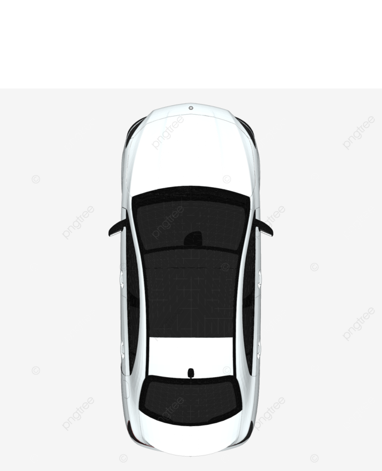
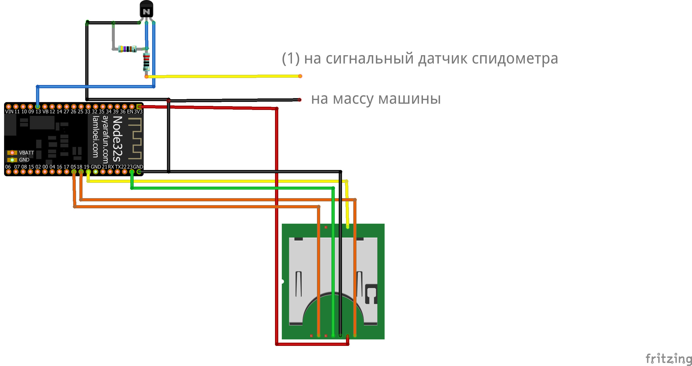

Текущая скорость:
0 км/ч| № | Описание | Количество |
|---|---|---|
| 1 | Превышена скорость | 0 |
| 2 | Играл в "шашки" (резко перестраивался) | 0 |
| 3 | Заснул | 0 |
| 4 | Съехал с маршрута | 0 |
Текущее ускорение:
0 м/с² Устройство Safe Driving Control

Для подключения устройства необходимо датчик спидометра (1) соединить с проводом (2).
Чтобы посмотреть нарушения необходимо перейти в первую вкладку.
Для сброса истории нарушений необходимо нажать кнопку "Сбросить" в вышеупомянутой вкладке.
О наc и нашей миссии
Автор проекта:
Лидером и единственным участником "команды" whatever является студент первого курса Kozybayev University - Шабанов Александр.
Цель проекта:
Цель проекта заключается в уменьшении количества нарушений водителей, путем отслеживания скорости и других показателей, и дальнейшего оповещения уполномеченных лиц.